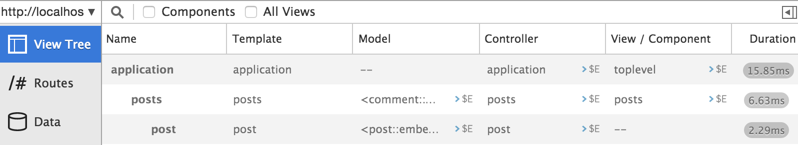
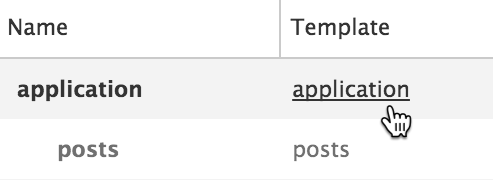
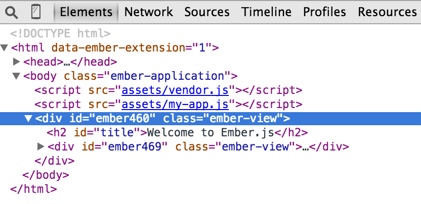
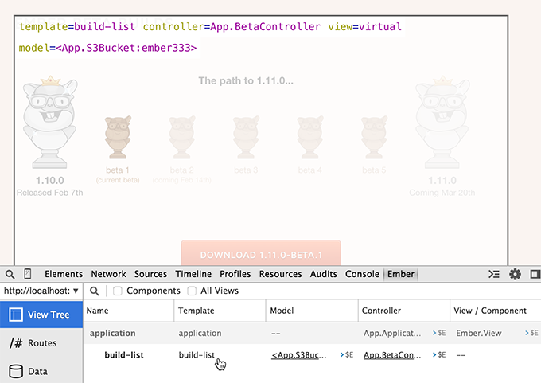
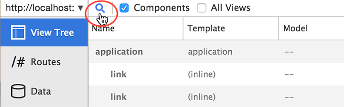
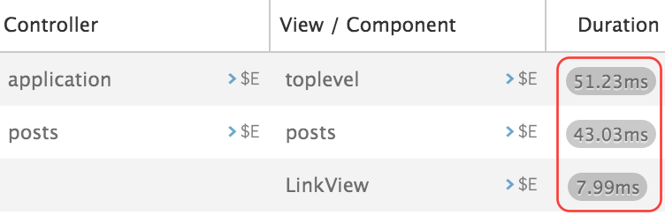

The View Tree 編集
You can use the View Tree to inspect your application's current state.
The View Tree shows you the currently rendered templates, models, controllers, and components, in a tree format. Click on the View Tree menu on the left to see these.

Use the tips described in Object Inspector to inspect models and controllers. See below for templates and components.
Inspecting Templates
To see how a template was rendered by Ember, click on the template in the View Tree. If you're using Chrome or Firefox, you'll be sent to the Elements panel with that DOM element selected.


Components and Inline Views
The View Tree ignores components and inline views by default. To load these into the View Tree check the Components and All Views checkboxes.

You can then inspect components using the Object Inspector.
Highlighting Templates
Hovering over the View Tree
When you hover over the items in the View Tree, the related templates will be highlighted in your app. For every highlighted template, you can see the template name, and its associated objects.

Hovering over the app
If you want to highlight a template or component directly within your app, click on the magnifying glass in the Inspector, then hover over the app. As your our mouse passes over it, the related template or component will be highlighted.

If you click on a highlighted template or component, the Inspector will select it. You can then click on the backing objects to send them to the object inspector.

Click on the X button to deselect a template.
Duration
The Duration column displays the render time for a given template, including the template's children.

By measuring the render time, the Inspector adds a slight delay to the rendering process. As such, the duration is not an exact representation of expected rendering time for a production application. Thus, the rendering duration is more useful to compare times than as an absolute measure of performance.